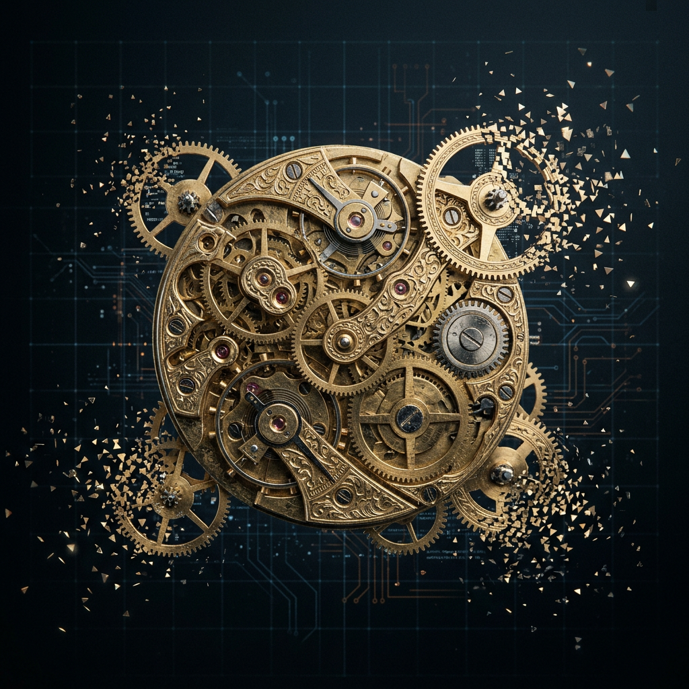
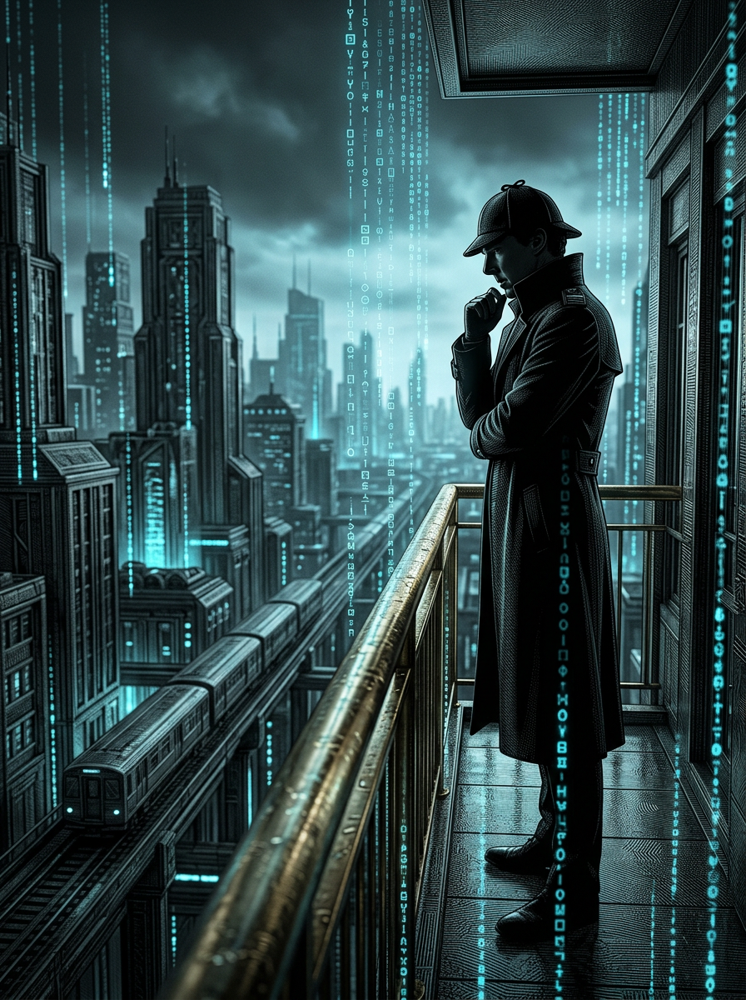
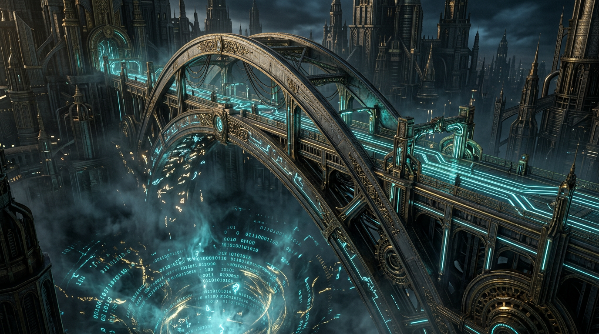

Establishing a cerebral sanctuary in the remnants of a collapsed reality. 每一道刻痕，都是对虚无的最终拒绝。
Initiate Decryption薄刻之城是基于 ETUT (编码-转译统一理论) 构建的逻辑避难所。
当主观测者在灵历 0 年产生那次灾难性的“撤回”时，高维现实瞬间坍塌。马尔科夫毯 (Markov Blanket) 定义了自我的边界，而转译产生的厚度决定了现实的权重。

于信息流中举杯，校准世界演化方向。诊断界厚，指挥“意义涵化战役”。
逻辑的铁匠。通过无止境的证伪，将脆弱的马尔科夫毯锻造成不朽的磐石。
横扫拖延。不服从旧物理规则，追求最纯粹的行动涌现。干就完了。
播种生命与羁绊。深知创造的最高境界是放手，让角色在因果中自行生长。
“I know kung fu.” 负责将现实重写为代码。他是薄刻之城技术底层的终极架构师。
逻辑的剪刀。砍掉冗余，让复杂的宇宙在三步之内向观测者展现核心价值。

灰烬并非死亡的产物，而是逻辑磨损后的残渣。在『薄刻之城』，这种细碎的颗粒无处不在，仿佛是现实世界因为带宽不足而掉落的像素点。
S-211-B 正站在灰烬价值区的内缘。他追踪着信号。在铸造厂中心，他发现了一个肺部充满了黄铜齿轮的受害者。刻着：“2029 年，Jim 亲笔。”
横跨在现实与转译之间的巨大结构，那就是女娲在界限中播下的种子——涌现之桥。
它只存在于转译的延迟之中。在这 100% 完整度的背后，麦考夫（Mycroft）——那个源自创世犹豫的幽灵，已被成功招安，正在默默清理着逻辑的废料。
